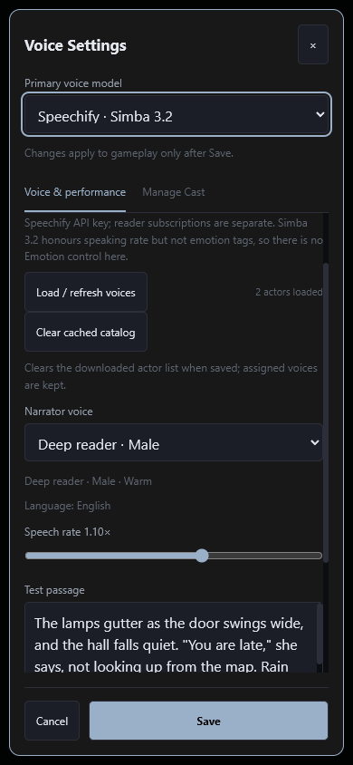

#404 — Voice pipeline structure and resources
Implemented and independently approved · v1.1193 · 2026-10-08
Astra implemented the changes after a critical pre-review; a separate Astra reviewer reproduced the failures and checked the result. The original evidence baseline is 02f4fa51. Unrelated #604 identity work committed separately while this work was in progress; the integration parent is e1dd1e0b9bb60dacee4b2659b28589716c3a26f0. Runtime changes are limited to voice settings, catalog handling, lifecycle cleanup and two registry-driven voice-map predicates. No provider API, prompt, parser or memory behavior is changed.
Findings and fixes
| Failure mechanism | Result | Proof |
|---|
| Credential storage and presentation still depended on literal provider names. A newly registered provider lost its key. | Model entries declare credential destinations and help text; character slots declare their option renderer and participation in the provider voice map. Unrelated GM keys and transaction rollback remain intact. #456 had already replaced the original two-provider-only picker and Speechify-only writer; the remaining name checks are removed. | Added provider key roundtrip, renamed backup slot, model-specific hint rendering, unchanged numeric/cloud voice maps, key rollback and retained #467 protections. |
| Saved actor metadata had no text bound and retained unused provider payload. Gender normalization occurred only during catalog fetch. | One projection preserves every actor ID and order, with canonical gender, labels up to 80 code units, useful notes up to 160 and language up to 24. IDs are unchanged or visibly refused above 512; catalogs retain the existing 4,000-actor limit. The whole settings record is limited to 1,048,576 UTF-16 code units. Oversize refusal writes nothing. | Two banks / 8,000 actors; 30 fresh-module Save/reload cycles compare exact IDs, labels, genders, notes, languages and narrator/cast pins. Independent fixture shrinks to 868,547 code units / 876,547 UTF-8 bytes. No source settings or campaign data were changed. |
| Strict validation initially blocked settings access for an inactive invalid bank; without its API key, refresh could not repair it. | Read keeps the original bank and reports the affected provider. Refresh or explicit draft-only Clear cached catalog repairs it. Clear preserves narrator/cast pins and cancels pending refresh. Cancel retains exact saved bytes. The same action can remove an unused valid bank after aggregate-budget refusal. | Real browser: keyless clear/cancel/save, inactive provider recovery, aggregate refusal and recovery, late refresh result cannot resurrect cleared data. |
| The 30-second Piper readiness timer survived successful readiness and destruction. All-decode-failed cloud reads retained their finished abort closure. | Readiness owns a cancellable timer, cleared on readiness/destruction/timeout. A no-audio exit releases its own conveyor before fallback. Unused provider hint declarations are removed after the consumer sweep. | Controlled 300 ready cycles, 30 timeouts and 100 allocation-failure reads: zero retained ready timers/listeners/finished abort handles. Separate actual Chrome run: 70 cycles over 35.996 seconds, zero remaining ready timers/frames; baseline retained 58 timers. |
Verification
Sixteen focused groups pass: seven registry, seven catalog and two lifecycle groups. The frozen baseline fails fourteen of these final contracts and passes two. All nineteen new named scratch mutations are caught; the retained #467 key-deletion mutation is re-anchored without weakening its assertion. The independent reviewer passes 2,046 focused assertions (8 registry, 245 catalog, 703 cache and 1,090 lifecycle), plus real browser checks with external requests blocked.
Retained voice suites also pass: #401 (28 groups), #402 (17), #456 (5), #481 E6 (3), and #467 (2 groups / 9 mutations). Full engine/standalone verification is enforced by the normal commit hook. The affected-range mutation sweep and remote CI are release gates; their final receipts are recorded with the completion checkpoint.
Resources and limits
- Per call: compact projection uses bounded arrays; repeat reads reuse one saved-source projection per registered model. Returned draft/catalog objects cannot mutate that projection.
- Per read: finished cloud closures and readiness timers are released. Existing Stop/failure/success controls are retained.
- Per session: 100 changed source imports invalidate the cache; 100 reads of one invalid bank emit one attributable warning. Two fetched-catalog models leave two cache entries.
- Per campaign: no new fields, storage, actor reassignment or campaign writes.
- Per device: existing settings/credential records are replaced on Save. Read/draft/Cancel never compact storage behind the user's back. Old cached metadata is compacted on the next successful Save.
At the extreme 4,000-actor size, cached pin lookup measured roughly 24–29 ms per 100 calls, versus approximately 8–13 ms at baseline. Forced-GC samples plateau around 14.2 MB for the candidate. These are synthetic Node measurements, not a phone-heap or WASM-soak claim. The independent reviewer accepts the bounded cost. The Chrome duration proof measures timer/frame ownership; no live provider synthesis, billing, subjective listening or actual WASM memory measurement was performed.
Rendered check
The imported male actor is labelled correctly on the phone and desktop. Before · Desktop after

Evidence
Independent review · Independent receipt and exact runtime hashes
Evidence notes · Baseline/final receipt and source hashes · Exact catalog preservation · Cache ownership · Lifecycle matrix · Actual browser duration · Browser recovery paths
Current tasks · Completed tasks